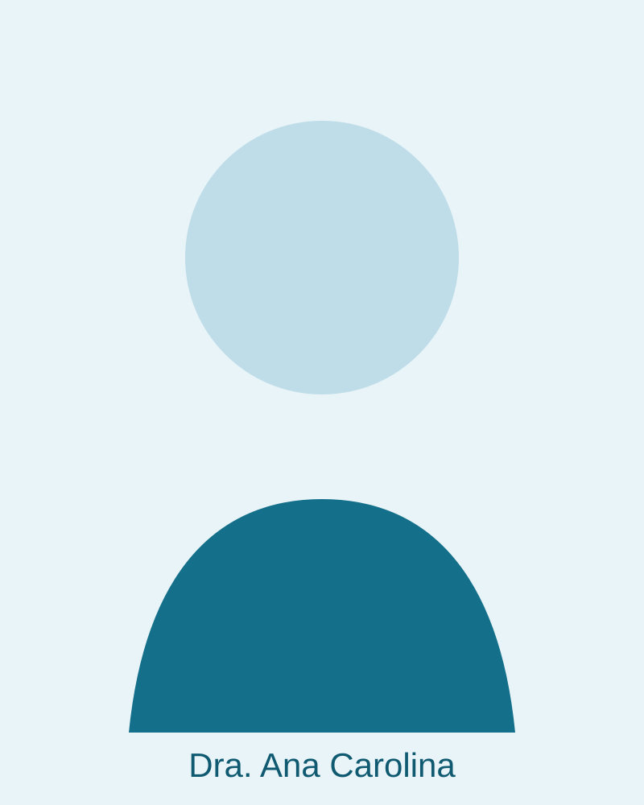
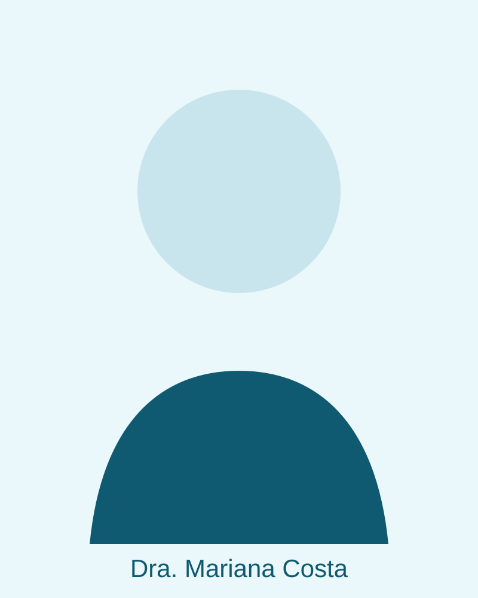
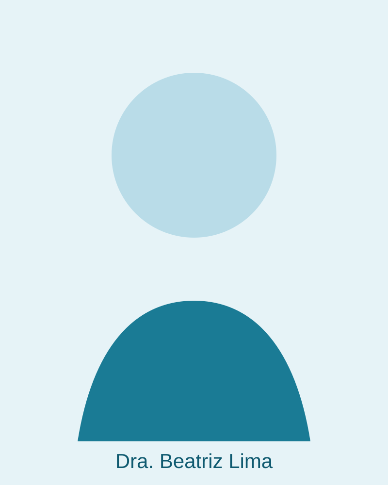
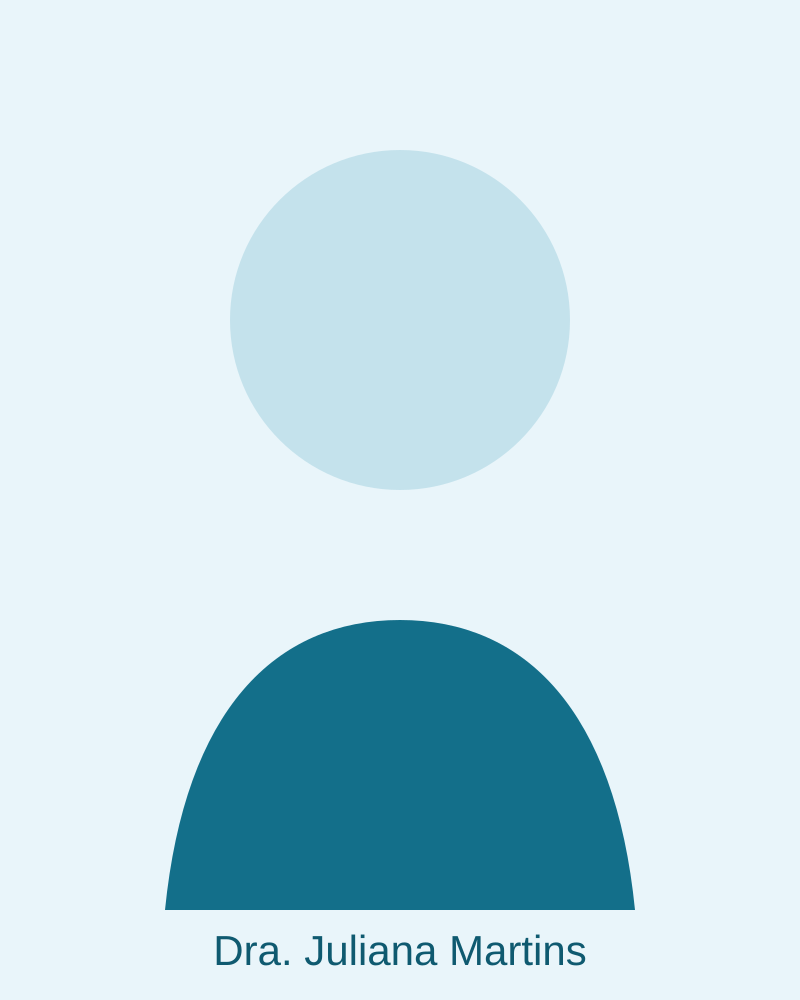

Anestesiologia Ambulatorial em Curitiba - PR
Cuidado humanizado com excelência técnica há 15 anos.
A CARE Curitiba é um grupo de médicas anestesiologistas dedicado a oferecer experiências cirúrgicas mais tranquilas, seguras e confortáveis para pacientes, equipes e instituições.
Sobre a CARE
Especialistas em anestesia ambulatorial com olhar feminino e humano.
Atuamos há 15 anos em procedimentos ambulatoriais, oferecendo suporte anestésico com protocolos modernos, monitorização rigorosa e comunicação clara com toda a equipe.
Nossa prática integra tecnologia, segurança e empatia para que cada paciente se sinta amparado do pré ao pós-operatório.
Valores
Princípios que orientam cada conduta clínica.
Cuidado
Escuta atenta, planejamento individualizado e presença constante ao lado do paciente.
Conforto
Ambiente acolhedor e abordagem tranquila para reduzir ansiedade e promover bem-estar.
Segurança
Protocolos baseados em evidências e monitorização avançada em todas as fases.
Profissionalismo
Ética, atualização contínua e integração multiprofissional em cada procedimento.
Equipe Médica
Conheça as médicas anestesiologistas da CARE Curitiba.
Profissionais experientes e acolhedoras, comprometidas com uma jornada cirúrgica segura e tranquila para cada paciente.

Dra. Ana Carolina
Médica Anestesiologista

Dra. Mariana Costa
Médica Anestesiologista

Dra. Beatriz Lima
Médica Anestesiologista

Dra. Juliana Martins
Médica Anestesiologista
Diferenciais
Por que escolher a CARE Curitiba?
- Acompanhamento próximo no pré, intra e pós-anestésico.
- Padronização de segurança com foco em qualidade assistencial.
- Comunicação transparente com cirurgiões, clínicas e pacientes.
- Atendimento humanizado para adultos e idosos em regime ambulatorial.
Contato
Vamos cuidar juntos da experiência anestésica dos seus pacientes.
Entre em contato para parcerias com clínicas, centros cirúrgicos e equipes médicas em Curitiba e região metropolitana.